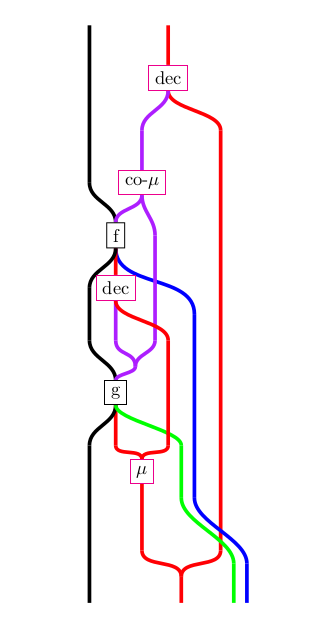

Hello world!
Click here to read the Tealeaves Coqdoc files
.
Here is a string diagram demonstrating the generalized notion of Kleisli composition formalized in Tealeaves. You can find the corresponding Coq definition
here in the docs
.
